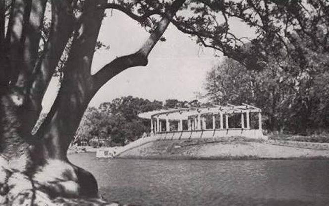
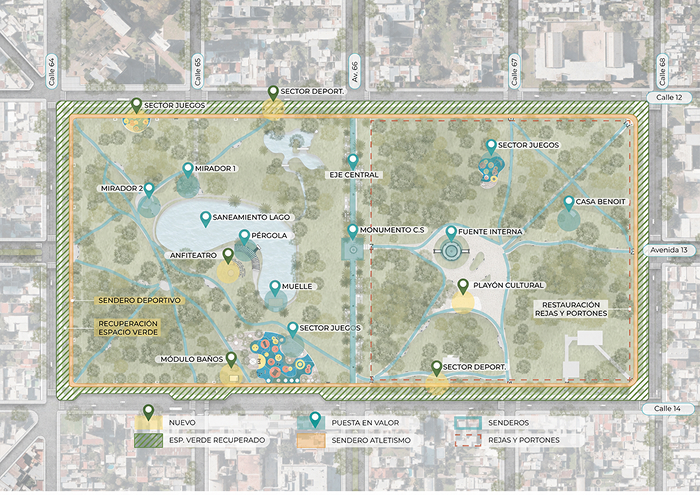

Vecinos autoconvocados nos unimos para informar, debatir y compartir opiniones sobre el nuevo proyecto del reformas de la Municipalidad en nuestro querido parque.
Sumá tu opiniónDiseñado en el plano original de la ciudad de La Plata e inaugurado formalmente en 1902, el Parque Saavedra es uno de los espacios verdes urbanos más antiguos y extensos de la región. Con una superficie de casi 14 hectáreas, su trazado original destaca por el gran lago central y una forestación diversa que incluye especies centenarias.


La controversia por el proyecto surge porque, aunque busca recuperar y ampliar los espacios verdes, muchos vecinos y organizaciones cuestionan algunos cambios propuestos. Entre las principales críticas se encuentran la reducción de calles y espacios para estacionar alrededor del parque, el posible impacto en la circulación vehicular y el acceso a instituciones cercanas, además de dudas sobre la preservación del patrimonio y el arbolado histórico. También se debatió la forma en que se presentó el proyecto, ya que algunos sectores consideran que faltó mayor participación ciudadana antes de avanzar con la iniciativa. Mientras tanto, sus defensores sostienen que la obra permitirá mejorar el estado general del parque y generar un espacio público más amplio, accesible y seguro para la comunidad.
Me preocupa mucho el tema de las reformas si van a sacar espacios verdes o árboles nativos. El parque ya es hermoso como está, necesita mantenimiento urgente de las luminarias y la limpieza, pero no que lo llenen de cemento ni que alteren su fisonomía histórica. Somos muchos los que venimos acá a buscar un respiro de la ciudad y a conectar con la naturaleza, por lo que destruir suelo absorbente para poner baldosas o estructuras modernas nos parece un error gravísimo por parte del municipio.
No vivo en el barrio pero voy seguido los fines de semana a andar en bici. Ojalá consideren ensanchar las bicisendas, pero sin descuidar el espacio para los peatones y los chicos.
Es clave que nos organicemos como vecinos autoconvocados para exigir una audiencia pública. Queremos ver los planos definitivos detallados y que la Municipalidad escuche nuestro proyecto alternativo antes de que empiecen a romper todo. No nos pueden ignorar..